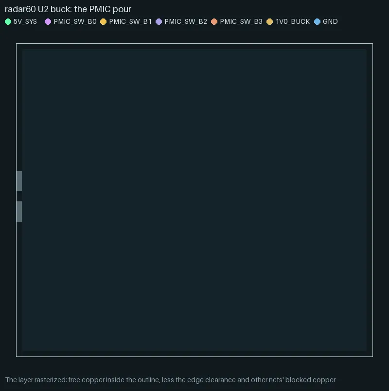
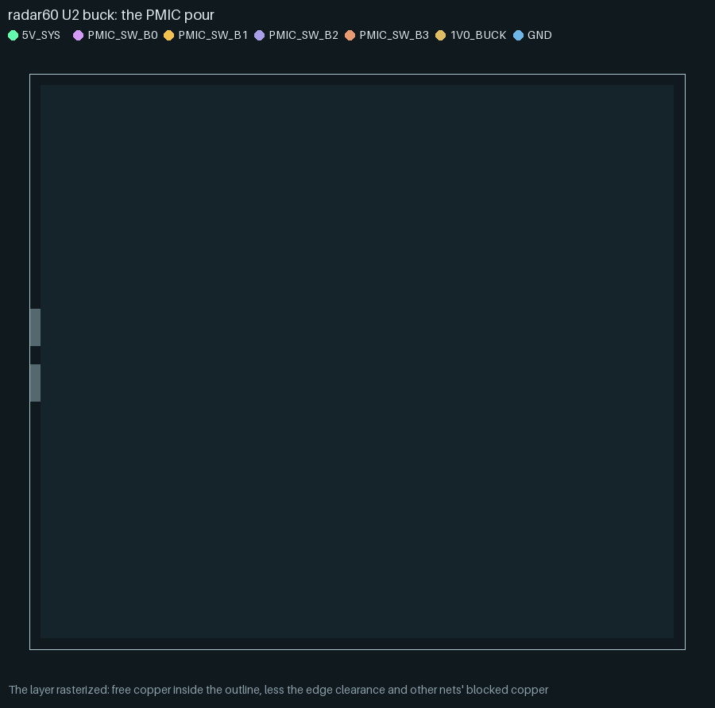
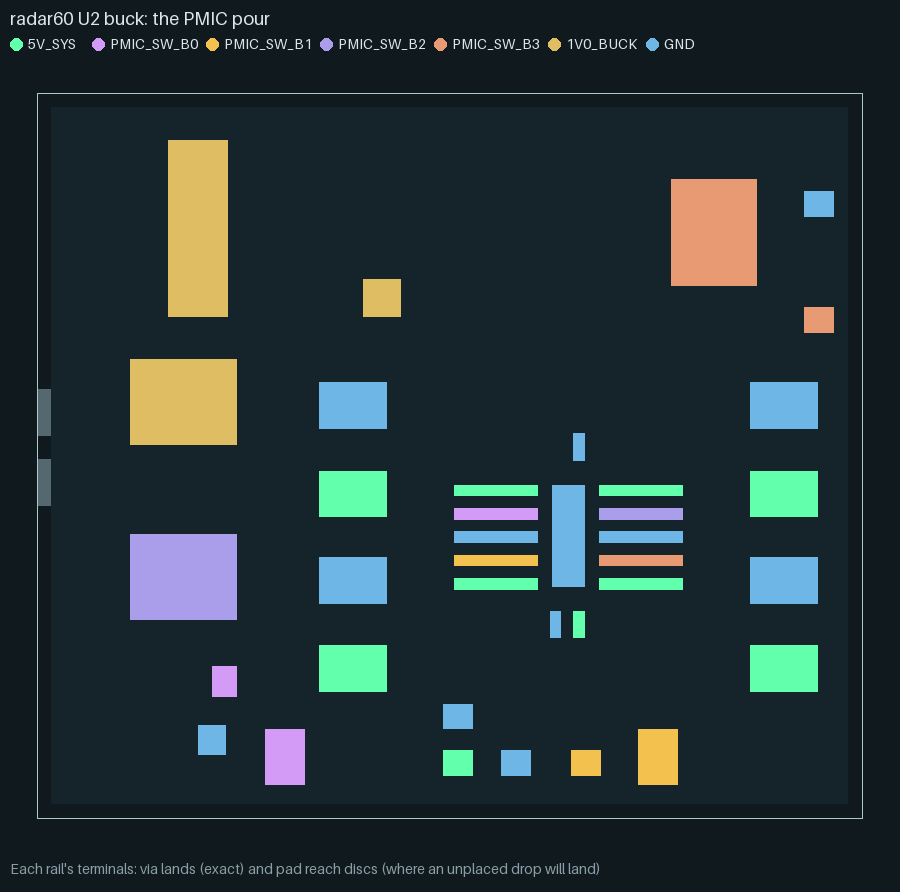
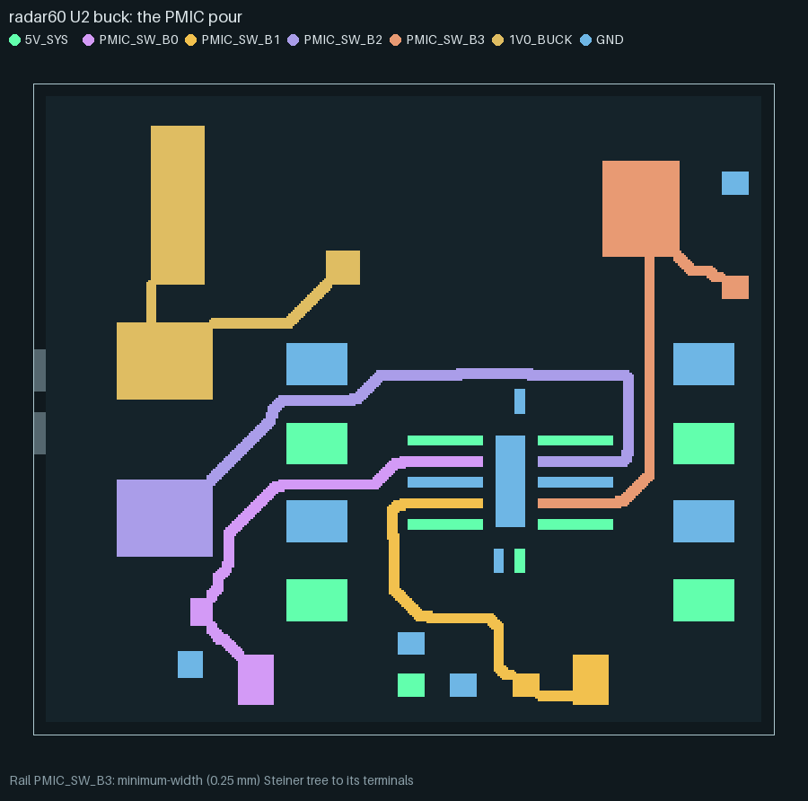
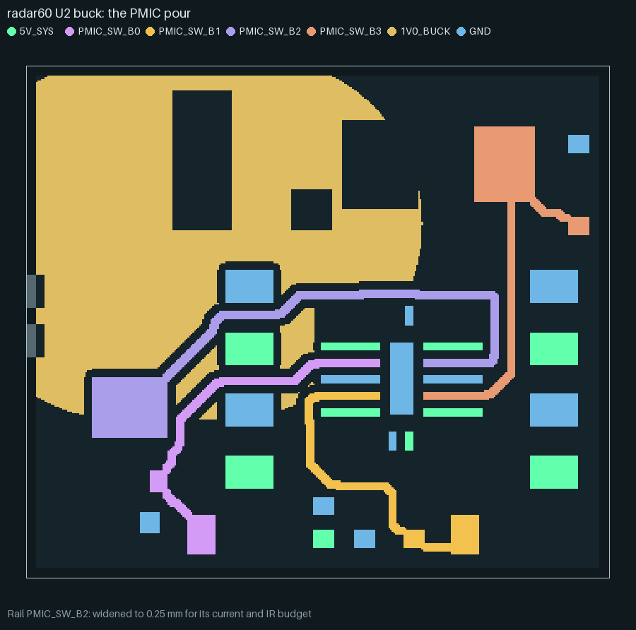
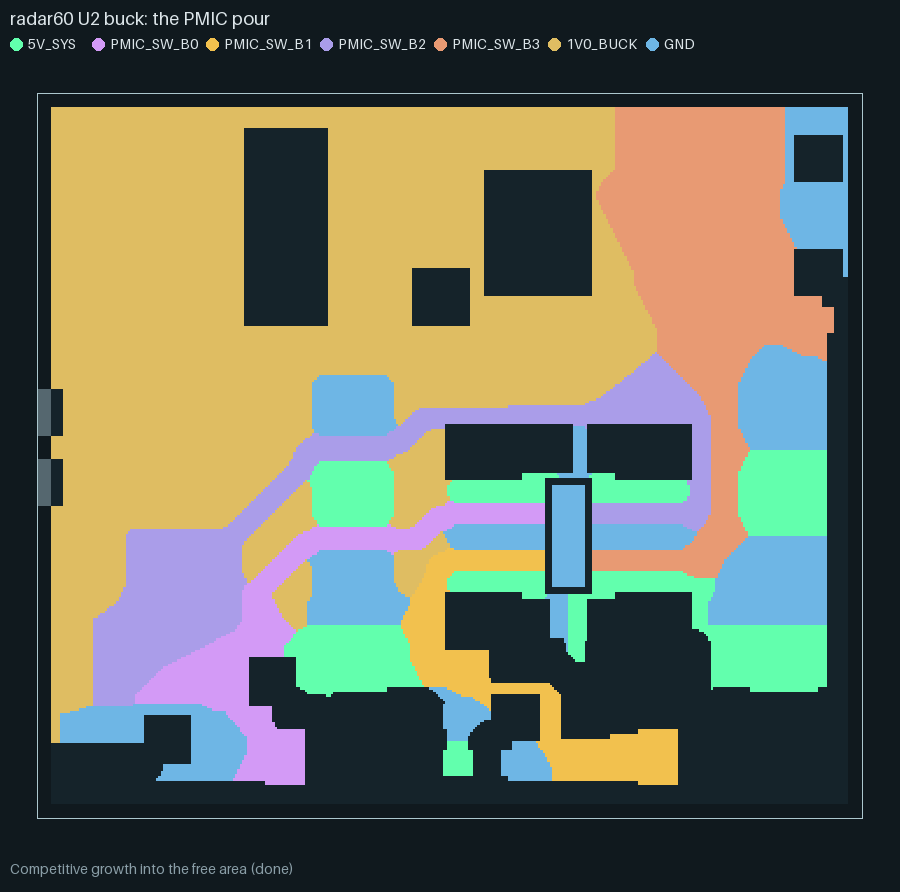
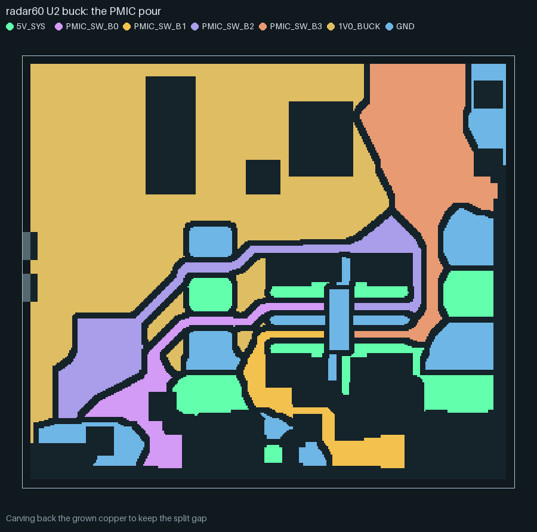
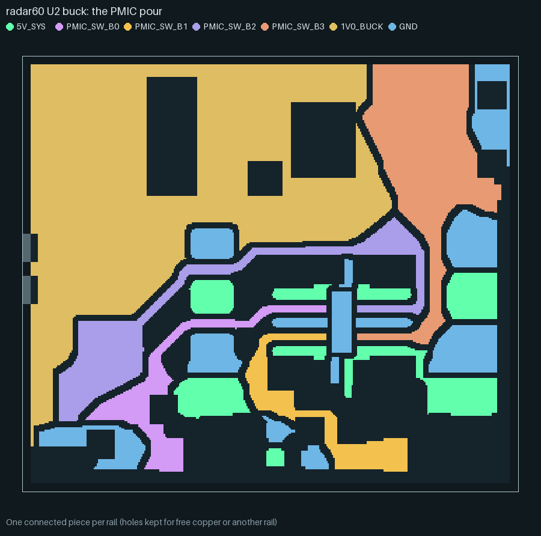

How plane partition works¶
Where several supply rails share one copper layer, pnr.plane_partition gives each rail a
connected territory built from its own terminals, instead of the cruder fallback (every
rail but the one with the most pads gets its pads’ bounding box plus 2 mm, which overlaps
where two rails’ balls spread over the same package). This page walks through the method
stage by stage, with stills and an animation of one real board, and closes with a review of
where the method sits in the published literature.
The declared inputs (the plane_partition: constraint section, every key, the outer-pour
region form) are documented in the plane_partition section of
the input reference; this page explains the mechanism behind them rather than repeating the
key list.
The example: a radar60 buck PMIC’s pour¶
The stills and the animation below are not a toy fixture: they are the real pad and courtyard
geometry of radar60’s U2 buck PMIC power block, candidate 34c7ed35931c from the stage-3c
wave-4 library (the layout this project’s own PMIC stage currently ships). It is an outer
pour (a region entry) on F.Cu, inside the courtyards of U2 and its four inductors, input
caps and sense resistor, splitting seven nets: 5V_SYS, the four switch nodes
PMIC_SW_B0..PMIC_SW_B3, the 1V0_BUCK rail (0.39 mOhm measured on the routed board,
against a 0.5 mOhm budget) and GND. GND and 5V_SYS are poured as pieces (their lands
need not join into one piece on this layer: the router stitches each piece to the net’s own
plane separately).
The geometry was extracted once from the candidate’s placed board
(hardware/pnr/regression/fixtures/pmic_pour_34c7ed35931c.json, pad lands, courtyards and
this candidate’s own clearances; see the fixture’s own meta.note) and the partition below is
re-run from that frozen input with hardware/pnr/regression/animate_plane_partition.py --out docs/images/plane-partition, which needs neither KiCad nor torch. The animation and the
stills are this script’s direct output, not a hand-drawn illustration.

Step by step¶
1. Rasterize the layer¶
The layer (or, for an outer pour, the region polygon) is rasterized at h_mm (here 0.05 mm):
a cell is free if it is inside the outline, past the edge clearance, and not on another net’s
copper (vias, fixed copper, plated holes, mounting holes, and copper_keepouts that bar pours)
at the pair’s clearance – the larger class clearance of the two nets, as KiCad’s own fill
keeps it. A plated pad is blocked by its rectangle grown by the clearance, not the disc inside
it: KiCad clears the clearance about the pad’s outline, past a square pad’s corners.

2. Terminals¶
A rail’s terminals are its planned drop vias (fanout and fixed vias), its plated through-hole
pads (each pad’s whole rectangle, claimed like a via land) and, on an outer pour with
terminals: pad, the pad’s whole land (claimed before any tree, like a via land); on a plane
layer without that key a surface pad without a via yet gets a reach disc instead, the circle
within terminal_reach_mm where its drop will land.

3. A minimum-width tree per rail¶
Rails are taken in order – by peak current, then terminal count, then name, unless the
section lists an explicit order (here no rail declares a current, so the order falls back to
terminal count and name; the engine also tries the order that starts with whichever
rail is left with an unreached terminal, and keeps the attempt that leaves fewest
unreached). Each rail gets a Steiner tree with the shortest-path heuristic: Dijkstra grows
the tree from its current cells to the nearest remaining terminal, on a cost grid where a cell
costs more the narrower than the rail’s wanted width (min_width_mm, or its IPC-2221 width
where that is larger) the trunk would be there (from a distance transform), and inside another
rail’s pad discs. min_width_mm is a hard limit outside the
rail’s own terminals: the tree passes only where a zone that wide still fits, keeping
split_gap_mm of copper from every other rail and leaving the next rails’ terminal discs free
to land on. A terminal the hard width cannot reach is joined instead where a zone of the
board’s minimum fab width still fills, and reported necked; one no path reaches at all is
unreached (its drop then fails in the drop planner).

4. Widen each trunk¶
Each trunk then widens, the higher-current rail first, to the largest of min_width_mm, the
IPC-2221 internal width for its current (at the layer’s copper weight) and R_sq · L / R_share
for its IR-drop budget (L the root’s path to its farthest terminal, R_share the budget less
two via barrels, at least a quarter of it; capped at 10 mm) – wherever no other rail’s copper
or pad disc already is. In this example 1V0_BUCK has no declared current but does have a 0.5
mOhm budget (ir_drop: section) over a 4.09 mm root-to-farthest-terminal path: that alone asks
for 16.4 mm and is held to the 10 mm cap, by far the widest rail here even though its
reported current is zero – the IR-budget term does not need a current figure to size a
trunk, only the budget and the tree’s own path length.

5. Competitive growth¶
All rails then grow together into whatever free cells are left, breadth first: every rail’s
claimed cells are the start of one combined queue, so a rail with more starting frontier (more
terminals, or terminals spread wider) tends to win more of the open area, first come, first
served. GND and 5V_SYS, poured as pieces, grow the same way but keep every piece that
touches one of their own terminals rather than only the one holding a tree.

6. Carve back the split gap¶
A cell a rail’s growth claims is carved back out again if it ends up closer than
split_gap_mm to another rail’s already-claimed copper, or closer than half that (plus a cell)
to another rail’s own grown copper – so two rails converging from opposite sides each carve
their own half of the gap, rather than one rail eating the other’s margin.

7. Polygons, connectivity and necks¶
Each rail’s claimed cells become polygons (holes kept where another rail or still-free copper
sits in them; a hole holding only another net’s blocked copper is filled, since KiCad’s own
fill would clear it anyway). The piece holding the rail’s tree is kept, every other piece is
dropped (a rail poured as pieces keeps every piece that holds a terminal instead).

Finally, a widest-path (bottleneck) search runs from the tree’s root through the rail’s own
drawn copper to every terminal: the largest, over every path the copper allows, of the
narrowest copper along that path. A terminal whose best path narrows under min_width_mm (less
one raster cell of tolerance: a strip of 2m cells reads (2m - 1) h wide) is necked; under
the rail’s IPC-2221 width it sets ipc_neck. None of the seven rails neck in this example
(three switch nodes bottom out at 0.23 mm, inside that one-cell tolerance of the 0.25 mm
minimum; no rail declares a current, so there is no IPC floor) – the small circles in the
still below are drawn at every terminal’s neck point regardless, where the narrowest copper on
its best path actually is, which for most of them is simply somewhere
along an already-comfortable trunk.
With core_no_vias (the default), each trunk’s claimed copper at its full width becomes a net
keepout: another net’s via may not land there, so a row of vias cannot cut a rail’s neck later
in routing.
Checks and reports¶
The route’s escape diagnostics carry a plane_partition report per layer (the full field list
is in the input reference). The checks that can fail a rail:
necked– a terminal’s widest path to the root narrows undermin_width_mm: a failure site of the route, carried with the neck’s width and position and a warning.ipc_neck– a rail’s widest-path minimum narrows under its IPC-2221 width for its declared current, even though it never dropped under the hard minimum.unreached– a terminal no tree, relaxed or not, could reach at all: its drop then fails in the drop planner, the same as a pad placed outside its region.walled_in(outer pours only) – another net’s land inside the region that the partition could find no corridor out for, before growth claimed the cells around it. This example’s report lists eleven: this reconstruction approximates the detailed router’s fanout-grid pitch (not available outside a full route) for the corridor width, so this count is illustrative of the field, not a claim about the production candidate’s own route.
Every rail in this example reports "status": "ok" and zero necks; the full report
(plane-partition-report.json, generated beside the images) lists each rail’s resolved
current, width, IPC and budget widths, tree length, reached/unreached counts, area and the
smallest gap to another rail.
Which rails get the plane: the allocation search¶
A dedicated plane layer’s nets are candidates. Which of them get a territory, which are
routed as ordinary traces, and which net takes what is left of the layer is decided by
pnr.rail_alloc, the way the engine decides everything else: by trying alternatives and
keeping the one that routes best.
Alternatives. Every split of the candidates into plane rails (at least one) and traced rails, times every leftover option: none (the plane rails compete for it), one of the plane rails (it alone grows; the others keep their trunk, their lands and a 1 mm apron, and round a pad’s land they grow past its thermal relief, 0.5 mm about the pad’s outline, by their minimum width, so the fill round the relief is one piece), or a
fill_candidatesnet. A spec can force a rail withmust_plane/must_traceor the leftover withfill; whatever it leaves open is the engine’s.Hard constraints only prune: a traced rail must carry its current at its class width (IPC-2221, external, 10 C) and meet its IR budget along its estimated trace.
Screen. One probe route (the real grid and fanouts, every candidate a plane) supplies the partition’s inputs; each alternative is partitioned on them at 0.25 mm and scored in millimetres of track: the partition’s quality penalty (below), each traced rail’s spanning tree (longer through crowded pads) plus its vias, each plane rail’s drop vias, and the old rule of thumb (a declared budget, 10 mA, 6 terminals) as a 5 mm prior per rail it disagrees with – a prior only, never the decision.
Route the finalists. The best three (each plane/trace split’s best first) are routed by the real router on the same placement; the fewest missing connections and unresolved nets win, then the lowest copper length + vias + partition penalty.
The decision is made on a design’s first route in a process (the initial pool’s first
finalist, or the first P/R round) and held for its later routes. The route’s
escape_diagnostics.rail_allocation names the chosen allocation, every screened and routed
alternative, and per rail the numbers that decided it, e.g. for the -rails rung:
VDDA: trace, routed 986.8 mm-eq (copper 852.8, 134 vias, partition 0.0) vs plane 998.8.
PNR_RAIL_ALLOC=static (run.py --rail-alloc static) restores the rule of thumb as the
decision, for A/B runs.
Judging a partition¶
Every partition reports quality per rail and per layer (pnr.plane_quality): area given
against area its terminals need (the trunk at its width plus the lands), compactness, trunk
length against the terminals’ minimum spanning tree, terminals that cannot reach the layer
(no trunk, no free cell in reach, no via site on the router’s grid), dead area serving no
terminal, the narrowest neck, the estimated IR margin, how much a region fragments its
neighbours, the split length it cuts into the plane, and a redundant fill (a fill net with a
dedicated plane elsewhere in the stack). The same numbers become quantified ERC-style
warnings (code, net, value, limit, message) and the allocation search’s penalty.
The ladder judges the routed board’s filled zones with the same measure (plane_quality
check, pnr.plane_quality.judge, plain Python under KiCad): a partition fails when a region
serves fewer than two terminals (one for an outer pour’s pieces), a region other than the
owner’s (the candidate with the most current) holds more than 6x the copper its terminals
need, a region’s geodesic tree runs more than 1.6x its terminals’ spanning tree, or a fill net
already has a dedicated plane elsewhere. The limits come from measured layouts:
layouts (boards) |
regions |
area / need, non-owner |
tree / MST |
fewest terminals |
redundant fill |
|---|---|---|---|---|---|
|
VIN, SW, GND |
at most 3.24 |
at most 1.34 |
1 (a land’s own piece) |
none |
|
VDD |
(owner only) |
at most 1.03 |
19 |
none |
|
VDD, VDDA |
VDDA 14.5 |
VDDA 2.20 |
3 |
none |
|
four |
VDDA 8.3 to 2165, VBAT 3.6 to 18 |
up to 3.97 |
1 (six boards) |
GND, every board |
The area limit sits at about twice the worst good layout (3.24) and the detour limit about 1.2x its worst (1.34); every good board passes and every board of the last row fails at least two ways (the owner’s 2026-10-06 review found the last row’s In4 split nonsense: VBAT’s ball had no way onto its region, and GND already had In1 and In3).
Limits¶
One shared plane layer at a time. The section divides one declared layer among its listed rails; a rail that needs its own uncontested plane still wants a dedicated layer.
A heuristic, not a global optimum. The shortest-path Steiner tree and the competitive growth are both greedy; a different rail order or a hand-routed split can occasionally beat them, which is why the order search (fewest unreached wins) and the per-terminal neck report exist – to surface where it mattered rather than to promise the best possible split.
Order-dependent growth. Competitive growth is first come, first served: changing
order:(or simply which rail wins a close current tie) can shift the boundary between two rails even when neither trunk changes.The hard minimum width is strict. Outside a rail’s own terminal discs (and
neck_mmaround them), the tree truly will not pass wheremin_width_mmdoes not fit, even if the fab’s own minimum track width would still let KiCad fill a hair narrower – a tight board can see terminals goneckedorunreachedthat a human router would still have joined.Raster resolution costs time and memory. A finer
h_mmsizes trunks and gaps more precisely at the cost of a bigger grid (this example’s 18.6 x 15.55 mm region at 0.05 mm is about 370 x 311 cells; a full board at a coarser 0.1 mm is the usual default).Caching is by exact input digest.
partition()caches its result by a hash of every input; the trace hooks below bypass that cache on purpose (see the next section), so a traced call always recomputes.
The trace hooks and this page’s tooling¶
pnr.plane_partition.PlaneTrace, passed as trace= to partition(), is an optional,
observational record of the eight stages above (raster, terminals, trunk, widen,
grow, carve, polygons, necks): every hook only copies an array the algorithm
already holds, and none of them changes the algorithm’s control flow, so a traced and an
untraced call return byte-identical results – tests/test_plane_partition_trace.py checks
exactly that, along with the trace’s own shape and ordering. pnr.animate.plane_partition
turns a trace into the WebP above (render_webp, reusing pnr.animate.encode’s WebP
step-down and size budget) and the stills (render_stills); tests/ test_animate_plane_partition.py checks the WebP decodes, plays every frame and meets its
budget, and that every stage gets a still. Reproduce this page’s images with:
bazel run //hardware/pnr:plane_partition_animation -- --out docs/images/plane-partition
Prior art¶
The method is not novel at its core, and this page does not claim it is. A prior-art
review of pnr/plane_partition.py found the same skeleton-then-grow architecture already
published:
build a connecting tree per rail, sized for its current or IR-drop budget;
grow all rails competitively into the remaining layer area, keeping a split gap;
legalize the result (connectivity, islands).
This architecture is described in a 2003 Mentor Graphics patent (US 7,124,390 B2; wireframes
per voltage, widened potential by potential “until the wireframe has grown into consuming all
of the available area on the layer”), again in close to the same terms by Liang et al. (IEEE
TCAD, 2025: a shortest-path-heuristic skeleton, then first-come expansion, then disjoint-set
legalization), and as SPROUT’s (Bairamkulov et al., 2021/22) per-net shortest-path seed plus
current-driven growth. Voronoi-based partitions (Lin et al., DAC 2024) and power-diagram-based
ones (Lin et al., ACM TODAES 2026) are close alternatives; the IR-budget width rule used in
step 4 above, W = ρL/(R·H), is in an IBM patent (US 10,785,867 B2). Every individual
building block is textbook: the shortest-path Steiner heuristic (Takahashi & Matsuyama, 1980),
Euclidean distance transforms, seeded region growing (Adams & Bischof, 1994), widest-path
search (Pollack, 1960) and the IPC-2221 conductor-width curves.
What the review did not find published is this specific combination: a hard minimum-width constraint enforced inside the skeleton search through a distance transform, the trunk width taken as the maximum of the fab minimum, the IPC-2221 width and an IR-budget width that subtracts via-barrel resistance, a per-terminal widest-path neck report, and reach discs for pads whose drop via is not yet placed – together, emitted as prioritized KiCad zones in an open-source flow. Commercial tools’ internals (Allegro, Xpedition, PADS, Zuken) were not reviewed, so this is not a basis for a novelty claim, only for describing this variant accurately: we are not aware of a published description that combines the hard minimum-width skeleton with a per-terminal neck report; commercial tools’ internals were not reviewed.
References¶
The reviewed sources, as cited above and in the review itself:
D. J. Smith, E. F. Smith (Mentor Graphics), “Generating a split power plane of a multi-layer printed circuit board,” US 7,124,390 B2, filed 2003-07-25, granted 2006-10-17. (Most likely expired; not legal advice, only a description.)
S. Liang, Z. Zhuang, K.-Y. Chao, B. Yu, T.-Y. Ho, “Multilayer Package Power/Ground Planes Synthesis With Balanced DC IR Drops: A Game-Theoretic Optimization Approach,” IEEE TCAD 45(1):453ff, Jan. 2026 (online June 2025). https://doi.org/10.1109/TCAD.2025.3577971.
R. Bairamkulov, A. Roy, M. Nagarajan, V. Srinivas, E. G. Friedman, “SPROUT – Smart Power Routing Tool for Board-Level Exploration and Prototyping,” IEEE TCAD 41(7):2263-2275, 2022 (online 2021). https://doi.org/10.1109/TCAD.2021.3101411.
H. Liao, V. Patil, X. Dong, D. Shanbhag, E. Fallon, T. Hogan, M. Spasojevic, L. B. Kara, “Hierarchical Automatic Multilayer Power Plane Generation with Genetic Optimization and Multilayer Perceptron,” J. Mech. Design 145(10), 2023. https://doi.org/10.1115/1.4062640 (arXiv:2210.16314).
C.-W. Lin, J.-Y. Weng, I.-T. Lin, H.-C. Hsu, C.-M. Liu, M. P.-H. Lin, “Voronoi Diagram-based Multiple Power Plane Generation on Redistribution Layers in 3D ICs,” DAC 2024. https://doi.org/10.1145/3649329.3657315.
Y.-Y. Lin, Y.-E. Lin, J.-M. Li, Y.-Y. Liu, “IR-drop Aware Multiple Power-domain Substrate Layout Optimization with Power Diagram,” ACM TODAES, 2026. https://doi.org/10.1145/3816039.
J. S. Werner, M. Cocchini, Z. T. Dreiss, N. G. Danyluk, E. N. Cohen (IBM), “Automatic determination of power plane shape in printed circuit board,” US 10,785,867 B2, priority 2018-09-25.
A. B. Amparan, D. Gines, K. L. Wible (Agilent), “Power plane splitting using a contour method,” US 6,846,992 B2, priority 2003-06-03.
H. Takahashi, A. Matsuyama, “An approximate solution for the Steiner problem in graphs,” Math. Japonica 24:573-577, 1980.
R. Adams, L. Bischof, “Seeded region growing,” IEEE TPAMI 16(6), 1994. https://doi.org/10.1109/34.295913.
M. Pollack, “The Maximum Capacity Through a Network,” Operations Research 8(5):733-736, 1960. https://doi.org/10.1287/opre.8.5.733.
IPC-2221 curve-fit constants (k = 0.024 internal; b = 0.44; c = 0.725), as published by Advanced Circuits’ trace-width calculator citing IPC-2221 (formerly IPC-D-275); the standard itself was not consulted, and IPC-2152 supersedes it for current capacity.
T. Lozano-Pérez, “Spatial Planning: A Configuration Space Approach,” IEEE Trans. Computers C-32(2), 1983. https://doi.org/10.1109/TC.1983.1676196.
E. W. Dijkstra, “A note on two problems in connexion with graphs,” Numerische Mathematik 1, 1959. https://doi.org/10.1007/BF01386390.
A full step-by-step table against the module’s own structure, the search methodology and its limits (general web search was unavailable; several sources are abstract-only; commercial tools’ documentation sits behind logins) sit in the review this section summarizes.